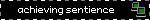
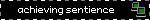

WELCOME TO MY SITE!!!!!!11!!!!!1!!!!


created on a 2736x1824 resolution screen :3


net neighbors!
let me know if you link me on your site :3

last.fm profile
neocities profile
spacehey profile
discord: cdlizard
bluesky: cdlizard
 

woof bark idk lol ☆ welcome to my personal site, i ramble and yap here
about-me speedrun: she/it ☆ minor, taken ☆ art, computers, music
look at something i made! ☆ i love my little pony
i find these sites cool:


 liedown1
wiishopchannel
adriansblinkiecollection
Nicky Case!
useful HTML site
liedown1
wiishopchannel
adriansblinkiecollection
Nicky Case!
useful HTML site